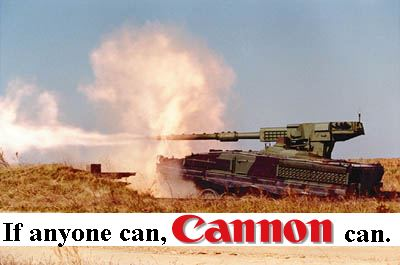

|
SPECIAL COLLECTOR'S SELL-OUT EDITION | MONDAY 21st JUNE | ||||||||
| MORNING FIST | ||||||||||
| ||||||||||
| ||||||||||||||||||
EVERYTHING'S FINE
Leader issues thumping endorsement of the status quo
This week, as in fact has been the case every week, The Leader has reminded us all that everything is quite all right. In speeches littered with ringing praise for "the way things are done at the moment", The Leader called for the world's top political figures to be given "a hearty slap in the back of the neck... Er, on the back".
But it is clear that our task is not yet done. As citizens of the new existing order, we have a duty to express our radical continuity in a forcefully moderate way. "Everyone must take to the streets," ranted a spokesman calmly during the Revolution's new slot on Richard and Judy, "as long as that is what they normally do. Otherwise they should take to their desks, ironing-boards and gardens, exactly as they have before".
The news that everything is to remain stable for the foreseeable future has taken public opinion by storm, but only insofar as it was already doing so when the same thing was happening before, i.e. always. Faced with fevered speculation that there was no need to worry, The Leader murmured "The future's bright. The future's Orange".

Governments and big business have today answered The Leader's call by whipping the efforts of the system to ever-greater plateaux of normality. "Of course the Revolution's endorsement matters to us," purred the nicely turned-out apologists of philanthropist-baron capitalism, "by embracing all of humanity it overlaps substantially with our target demographic. If we didn't think the Revolution was a going concern, we wouldn't have bought it". Seated at the left hand of Mr Mammon during the press conference, The Leader eagerly concurred. "Where, after all, do we want to go today?".
*Revolutiontm, The Leadertm, There is only one will and that is the will of the People expressed through the Partytm, You'll be the first to the walltm and Why so many questions, Comrade?tm are registered trademarks of the Revolution inc., which is a wholly-owned subsidiary of Mitsubishi Heavy Industries.